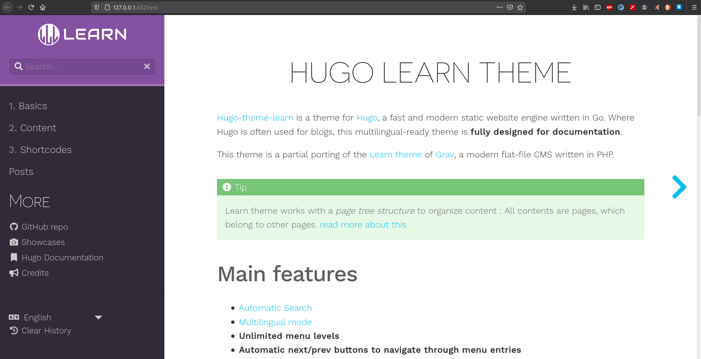

Chapter 11 Blogdown: websites and blogs creation
Now that you are a confident R programmer and a budding data scientist, how are going to show such accomplishments to the rest of world? People love talking, but you, you know that you must provide data. Why not creating a website to showcase your work? You know from the previous chapters that R/Rstudio provides a wide set of tools, you may have heard that it is possible to build a website, but it seems so complicated. Is it? Well, let’s find out.
11.1 Static website overview
A convenient solution to create a website is to use the R package blogdown. By default, blogdown is based on the static site generator Hugo. A static web page is a document (often HTML) stored as a file for which its content (text, image, videos, …) does not dynamically change according to the context of the user. For Hugo, when you build a static web page, the HTML file is rendered locally on your computer as opposite to a hosting server.9 As a result, usually static sites offer better performances. Among different static site generator, Hugo has the reputation the be the fastest.10 Note that if your interest narrows to making a website for an R package, then you may want to turn to pkgdown which will require less investment of your time, but certainly also less reward.
11.2 Getting started
You need to install the blogdown package the usual way:
Note that the package has addins functionalities for Rstudio and a project type that we are going to use.
Create a new project selecting Website using blogdown.

11.3 Choosing a theme
The choice of the theme is essential: different themes have different ways to create content, structures, functionalities and maybe most importantly when you get started, different level of details for user documentation. By default, blogdown proposes the hugo-lithium theme, Yihui Xie’s minimal example.11 The complete list of themes is at https://themes.gohugo.io/. The showcase section is also a good indication of what may be achieved. You can find themes with rich user documentation under the tag documentation, check here. Some Hugo templates I considered:
Learn: This a great and simple theme. It is perfect if the goal is to create documentation. This is for example the one I used for one of my classes, see here. It has a dedicated website for the documentation. This is why I pick it for this chapter.
Academic: this a very complete theme for academic résumé. It is commonly used in academia (there is a tool to import your BibTeX bibliography!) so there is quite a community behind it, meaning also more support. It has many options and features including
widgetsto build pages. It is however probably an overkill when getting started.Tranquilpeak: a beautiful and neat theme for blogging. It comes with a complete documentation.
Once you’ve picked a theme up, you need to specify under Hugo theme: the USER_NAME/REPOSITORY_NAME from the GitHub repository of the theme. For example, the Learn theme is at https://github.com/matcornic/hugo-theme-learn so we enter:

11.4 Rendering the website
One attractive feature of Hugo is that you can render your site live locally (on your computer) so that you can observe directly the modifications taking place. With blogdown, type in your console:
Or alternatively, use directly the Rstudio Addins.

It creates the website in the viewer panel.

I would recommend to open the website on your webrowser, for example by clicking on the Show in new window button . It will be very similar to the online version and you can directly see the modifications.

In order to stop the live rendering of the website, you can either restart the R session, or maybe simply, by typing in your console:
11.5 Creating content
The next step is to create some content. We will create a post and illustrate some features of Hugo.
First, you need to decide whether you want to create a plain Markdown document (.md) or a RMarkdown document (.Rmd) as there are noticeable differences.12 A plain Markdown document is by default rendered a posteriori in HTML via Goldmark13 whereas RMarkdown is compiled a priori using the rmarkdown package. A consequence of using RMarkdown is that your website might be slower to render and less clean with many HTML files. A good rule of thumb is: always write a post with plain Markdown unless you need to run R code (if only display R code, use plain Markdown).
The easiest way to create a document is to click on Addins > Blogdown > New post which generates a windows through a shiny app. Here is an example:

Archetype is a pre-configured skeleton page. The Learn theme has two archetypes: chapter or default (see here).
Format: there is a third format,
.Rmarkdown. This format will be compiled to a Markdown document (not HTML) so you keep the files clean, however it does not use Pandoc as thermarkdownpackage does (see Blogdown output format for more details).
The post I’ve generated has the following YAML metadata:
Note that the output format has not been specified as it is HTML by default.
We can immediately have a look at the changes on the website.

Note that the address http://127.0.0.1:4321 is local.
Alternatives to create content are as follows:
Click on
Addins > Blogdown > New postas we have just seen.Equivalently, you can type in your console
As an alternative, you can directly create the document (e.g.
File > New file > R Markdown). In addition, you will need to know where to store the file (explained in the next section) and adapt the metadata of the file (you can for example have a look at the already existing posts).Eventually, you can use command lines in the terminal as for example shown here.
Second, you can now write some content in your file. Since I want to illustrate some of Hugo’s features, I create a new Markdown file named test.md in the post folder (remember that R Mardown are compiled via rmarkdown, so it will not understand Hugo shortcodes). The header of the file is simply:
Note that you can also add other variables such as: date, weight, description. weight for example is important for organizing the posts. You can find here a complete list of variables.
Most of the content you create is generally in Markdown format, and we let you refer to Chapter 2. Note that since your Markdown file is rendered using Goldmark, there are some differences compared to Pandoc (as used with the library rmarkdown), one noticeable is that you cannot run R code as already discussed. One of the gain of using the Markdown format is that you can use Hugo shortcodes. As stated on Hugo’s website:
Hugo loves Markdown because of its simple content format, but there are times when Markdown falls short. Often, content authors are forced to add raw HTML (e.g., video iframe’s) to Markdown content. We think this contradicts the beautiful simplicity of Markdown’s syntax.
The idea of shortcodes is to circumvent some of Markdown’s limitations. For example, if you want to embed a Youtube video, say
you can simply use the following syntax
Here is how it looks on the website:
You have other Hugo’s built-in shortcodes useful for example figures, Instagram, Tweeter, Vimeo,… Check this link. There is also the possibility to create custom shortcodes. For example, the Learn theme proposes several. For instance, we can add an info notice using
11.6 Website structure and content organization
If you’ve followed the above steps, you should have something similar to this tree for your website structure:
my-website/
├─ my-website.Rproj
├─ config.toml
├─ index.Rmd
├─ LICENSE.md
├─ content/
│ ├─ _index.en.md
│ ├─ _index.fr.md
│ ├─ basics/
│ ├─ cont/
│ ├─ post/
│ │ ├─ 2015-07-23-r-rmarkdown.html
│ │ ├─ 2015-07-23-r-rmarkdown.Rmd
│ │ ├─ test.md
│ │ ├─ 2020-11-16-my-first-post.html
│ │ ├─ 2020-11-16-my-first-post.Rmd
│ ├─ shortcodes/
├─ layouts/
├─ public/
├─ static/
│ ├─ css/
│ ├─ fonts/
│ ├─ images/
│ │ ├─ showcase/
│ │ │ ├─ inteliver_docs.png
│ │ │ ├─ tat.png
│ │ │ ├─ tshark_dev.png
│ ├─ post/
├─ themes/
│ ├─ hugo-theme-learn/config.tomlis where you have configuration directives. Some themes such as Academic haveconfig/directory. These directives could also be stored inJSONorYAMLsyntax.index.Rmdis specific toblogdown.The
content/folder is where you will add all the content for your website (although not absolute, see Toha theme for such an exception). Hugo follows the same logic as this folder to construct the website. The organization between different pages at the same level can be specified using theweightvariable. Usually a section begins with a_index.mdfile (see this link). In the tree above, there is in addition the distinction between languages. For example, the_index.mdfile in thebasics/(not shown in the tree) folder has a weight of 5, whereas it is 10 fontcont/sobasics/appears first.The
layouts/folder contains templates in HTML. If empty, it uses the theme defaults. You need to copy such a file from the theme before modifying it, it is a bad habit to modify files from thetheme/directory.static/stores all the static content such as CSS, JavaScript, … This content is served as-is, meaning without modification to the website. For example, the image instatic > images > showcase > tat.pngcan be directly accessed at https://learn.netlify.app/images/showcase/tat.png. Note that there is astatic > postdirectory that contains your R Markdown extra files.
{kind=link}
See this link for other directories and further information.
11.7 Customizing the theme
Customization depends on the theme you’ve chosen. For example, with the Learn theme, you can easily modify the color variants (see here), but is is limited to 3 colors. To create your own variant, you will have to create a CSS file in static > css with your own setup following this example. You can also modify the logo and the favicon.
Other common customizations include:
Modify the menu, this is generally easily achieved, check this.
With
blogdown, it is recommended to ignore some files by adding
to your config.toml file. See this link for further explanations.
Google analyitcs: simply add
googleAnalytics: UA-XXX-YYin yourconfig.tomlfile using your Google Analytics tracking identifier. Apparently the tracking works also when working locally usingblogdown::server_site(), this blog offers a solution.Disqus: add the popular commenting system by adding
disqusShortname: yourdiscussshortnameto yourconfig.tomlfile.Add a Robots.txt to your website (see this). Review last chapter on webscraping if you don’t remember what it is.
LaTeX equations. If you use
.Rmd, then you can render math equations (see Chapter 2). For.mdfile, a solution is to use MathJax but you will need some tweaks following for example this blog.
See https://gohugo.io/templates/internal/ for other templates.
11.8 Deployment
Once your website on a GitHub repository (follow our Chapter 3), it is easy, quick and free of charge to publish your website online using for example the service of Netlify. You need to register to Netlify, for example using your GitHub credentials, and then authorize Netlify to access to the relevant repository. The website then will be deployed automatically. You may want to modify the name (usually fantasist by default) and the version of Hugo to compile your website. See Blogdown: deployment with netlify for more details.
11.9 See also
See the following blogs of Dr. Mowinckel’s and Esteban Moro for recent and alternative explanations.